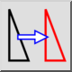

amp;Liikumine / kopeerimine
Tööriistariba / ikoon:


Menüü: amp;Muuda > amp;Liikumine / kopeerimine
Otsetee: M, V
Käsklused: move | mv
Kirjeldus
Liigutab või kopeerib objekte.
Kasutamine
- Valige objektid, mida soovite liigutada või kopeerida.
- Käivitage see tööriist.
- Määrake viitepunkt hiirega või sisestage koordinaat käsureale.
- Määrake sihtpunkt. Valitud objektide liigutamiseks antud võrra sisestage suhteline koordinaat. Näiteks 50 jooniseühiku võrra paremale liigutamiseks sisestage käsureale @50,0.
- Kuvatakse liigutamise dialoog. Objektide liigutamiseks valige "Delete Original", nende kopeerimiseks valige "Keep Original". Samuti saate luua korraga mis tahes arvu koopiaid, valides "Multiple Copies" ja sisestades koopiate arvu allolevale tekstireale. Pange tähele, et "9" loob 9 koopiat ja säilitab originaali - seega on lõpuks valitud objektidest 10 eksemplari. Uued objektid paigutatakse samale kihile nagu originaalid ja neil on samad atribuudid. Selle asemel praeguse kihi ja praeguste atribuutide kasutamiseks märkige "Use current layer and attributes".
- Objektide liigutamiseks või kopeerimiseks klõpsake "OK".